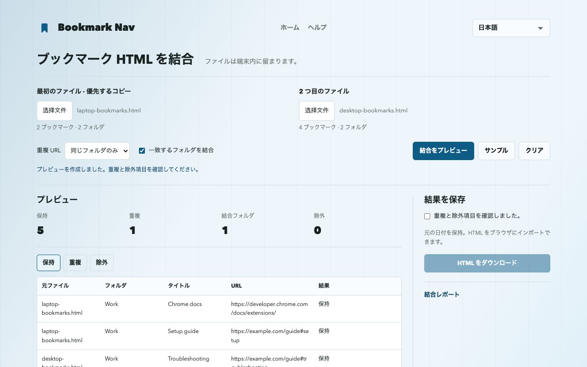

Chrome のブックマーク HTML を結合する方法
2 つの Chrome ブックマーク HTML を選び、重複をプレビューし、結合ファイルをダウンロードして Chrome にインポートします。書き出したファイルを結合するもので、アカウントや同期の統合ではありません。
書き出したブックマークを結合書き出し・結合・インポート
- chrome://bookmarks を開き、ブックマーク マネージャのメニューでエクスポートを選びます。元の HTML をバックアップとして保存し、もう一方のライブラリも書き出します。
- ウェブ版ツールで 2 つのファイルを選びます。重複削除時は最初のファイルが優先されます。
- まず同じフォルダ内だけの重複削除で、保持・重複・除外項目を確認してからルールを変更します。
- プレビューを確認して HTML をダウンロードします。サイトからブラウザのブックマークを変更することはありません。
- Chrome ブックマーク マネージャのメニューから HTML をインポートします。まず空のテスト用プロファイルで確認すると、通常のライブラリへの重複追加を避けられます。
再現できる 6 リンクの例
サンプルには合計 6 リンクがあり、既定のプレビューは 5 を保持し、同じフォルダ内の重複を 1 つ削除します。Learning と Work の同一 URL は両方に残り、#setup と #troubleshooting は別のリンクです。

保持と除外のルール
重複を削除する場合は最初のファイルを優先します。URL は完全一致で比較し、パラメータ、#フラグメント、プロトコル、www の違いを保持します。既定では異なるフォルダの同一 URL を保持します。
名前と親のパスが一致するフォルダのみ結合します。結合をオフにすると元ファイルごとにフォルダを作り、同じ階層の同名フォルダに番号を付け、ブックマークバーのマーカーを除去します。
ダウンロードには全階層、対応 URL、タイトル、利用可能な ADD_DATE / LAST_MODIFIED を含みます。アイコン、説明、タグ、同期情報は含みません。欠落または未対応の URL（javascript:、data: を含む）は除外として表示します。リンクの有効性は確認しません。
バックアップとインポートの制限
両方の元ファイルを保持し、インポート先もバックアップしてください。インポートは追加なので、繰り返すとさらにコピーが増える場合があります。HTML は既存のライブラリを自動で置き換えません。
UTF-8 Netscape ブックマーク HTML。各ファイルは最大 10 MiB、25,000 ブックマーク／フォルダ、64 フォルダ階層（外側のリストを除く）。JSON と plist は未対応です。
結合結果が入力制限を超えると、このツールで再読込できない場合があります。元ファイル別のフォルダは階層を 1 つ増やします。元のエクスポートを保持してください。
Chrome は空のフォルダを除外し、フォルダの日付を再設定します。ブックマークのタイトル、URL、追加日は保持します。ブックマークバーのマーカーはブラウザのバーに対応する場合があります。
ウェブ版と拡張機能の違い
ウェブ版は拡張機能なしで使え、HTML をダウンロードするだけです。直接追加、バックアップ、変更確認付きの取り消しは拡張機能 1.3.1 向けに準備済みですが、公開版に含まれるとは限りません。インストール済みバージョンと結合メニューを確認してください。直接追加は独立フォルダを作り、元の HTML の日付ではなく現在の日付を使います。
Bookmark Nav を入手よくある質問
ファイルはアップロードされますか？
ファイルはこのタブのメモリ内で処理し、アップロードや分析には使用しません。再読込やページ移動で消去されます。ダウンロードは端末に保存されます。
Chrome アカウントや同期ライブラリを統合しますか？
いいえ。端末内で 2 つの HTML を結合します。Chrome 同期はブラウザの設定に従います。
日付と空のフォルダは保持されますか？
元の日付を保持。HTML をブラウザにインポートできます。
Chrome は空のフォルダを除外し、フォルダの日付を再設定します。ブックマークのタイトル、URL、追加日は保持します。ブックマークバーのマーカーはブラウザのバーに対応する場合があります。